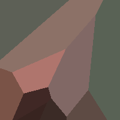
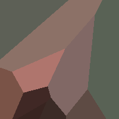

Image Processing
This project was build on Java. Utilized MVC (Model, View, and
Control) design and SOLID principals.
The GUI allows user to input pictures and interact with buttons to
manupilate images. It works like a filter on Instagram. and user can
also store or add layers of pictures. User can look up commands on
the README and user can use all sorts of scripts. and scripts can be
imported and the scripts can be moved.


 
